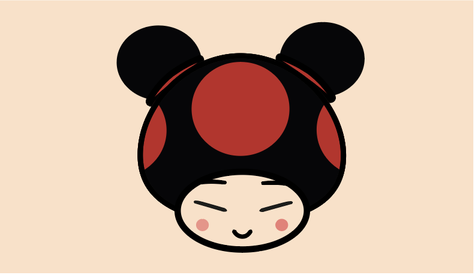

Design à l'image des champignons de Mario
Ce design de bière a été le deuxième exercice d’infographie auquel j’ai faire affaire à la formation des Métiers du Multimédia et l’Internet. La consigne était de réaliser un personne à l’image du champignon de la saga Mario. Le personnage n’était pas imposé, mais le logiciel l’était: Illustrator. J’ai choisi de réaliser les personnages Buzz l’Éclair, Pucca et Miaouss. Le personnage qui a été le compliqué à réaliser a été celui de Buzz l'Éclair car il possède beaucoup de détails. Le champignon qui a été le plus rapide à réaliser est celui de Pucca, car il possède un design simple.
- 
-